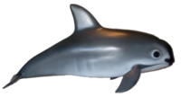
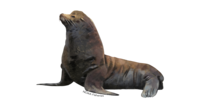
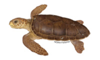
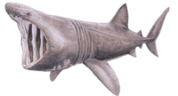
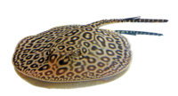
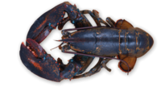
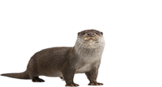
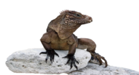

Examples of all taxonomic domains — Archaea, Bacteria, and Eukarya — live in the ocean. Typically, scientists divide aquatic wildlife into seven sections:
- 1- Shellfish, Cephalopods, and Crustaceans
- 2-Corals and Other Invertebrates
- 3-Marine Mammals (i.e., whales, dolphins, etc.)
- 4-Fishes
- 5-Sea Turtles and Reptiles
- 6-Seabirds
- 7-Sharks and Rays
Due to centuries of over-fishing and pollution,many ocean animals are endangered or on the verge of extinction.
- Vaquita: Critically Endangered
Vaquitas They’re the smallest cetaceans and only live in the Gulf of California. Currently, their main threat is getting caught up as by-catch. Additionally, since so few remain, reproduction isn’t plentiful.
 - Steller Sea Lions: Near Threatened
Steller sea lions, which inhabit northern regions of the Pacific Ocean, are Near Threatened. The amphibious marine mammals are smaller than walruses but larger than other sea lion subspecies.
 - Hawksbill Sea Turtles: Critically
Endangered
Hawksbill sea turtles can be found in all parts of the ocean and attached lagoons. Their colors change slightly depending on water temperature.

The Blue Whale
The Killer Whale
White Shark
Giant Pacific Octopus
Japanese Spider Crab
Giant Manta Rays
With over 72% of the Earth’s surface covered by salt water, the Earth’s oceans are home to 230,000 known species. And that’s with only 5% of the Earth’s oceans considered explored.
We can find a large ecosystem that has an extensive biodiversity of species and plants, in fact it is so large that scientists are unaware of all the species that inhabit the seabed.
In the sea live numerous species of fish, reptiles, birds, mammals in the group of vertebrates, the invertebrates being the cnidarians, echinoderms, sponges, marine worms, crustaceans and mollusks.
We can find a large ecosystem that has an extensive biodiversity of species and plants, in fact it is so large that scientists are unaware of all the species that inhabit the seabed.
| Animal name | Image | Where can we find them? |
|---|---|---|
| Basking Shark |  |
Though they are quite large, there are gaps in scientists’ knowledge of their life history characteristics because they have very large individual home ranges and do not stay in any one place for longer than a couple of months. |
| Giant Manta Ray | 
|
Giant manta rays are found worldwide in tropical, subtropical and temperate waters and are commonly seen offshore, in oceanic waters, and near productive coastlines. |
| Marbled Electric Ray |  |
Marbled electric rays are commonly found in the eastern Atlantic Ocean bordering Africa up to Norway, as well as parts of the Mediterranean Sea. |
| American Lobster |  |
American lobsters are found in the northwest Atlantic Ocean from Labrador to Cape Hatteras. |
| Marine Otter |  |
Marine otters are found in littoral areas of southwestern South America, close to shore and in the intertidal areas of northern Peru. |
| Marine Iguana |  |
Marine iguanas are endemic to the Galapagos Islands and are the only marine lizard species in the world. |